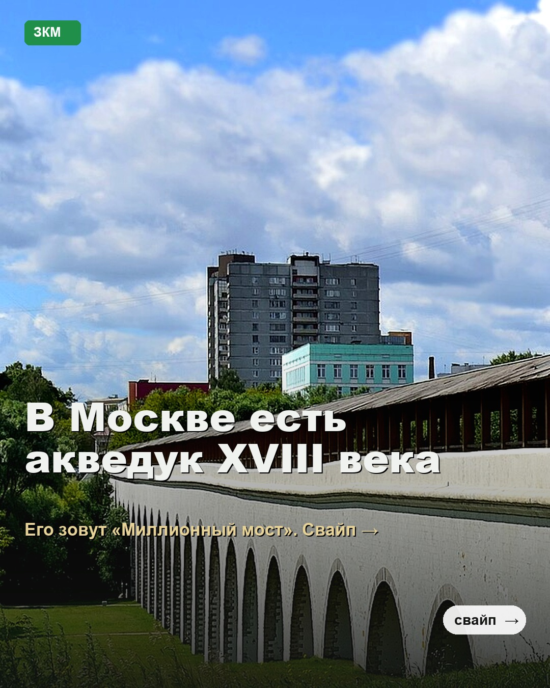
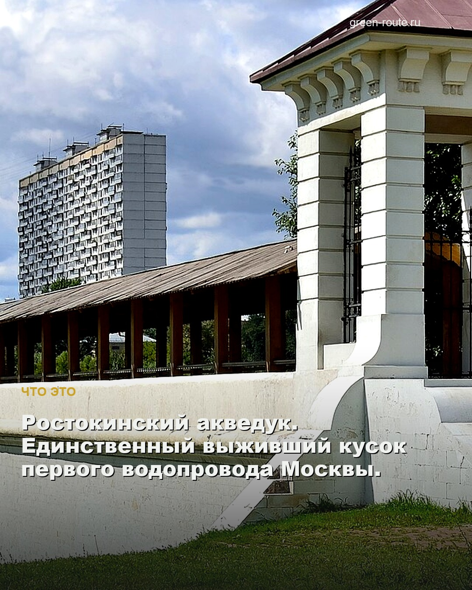
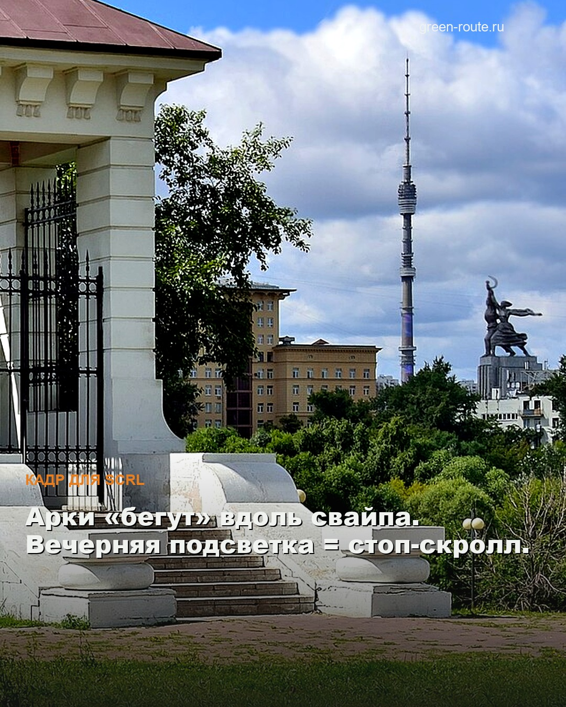
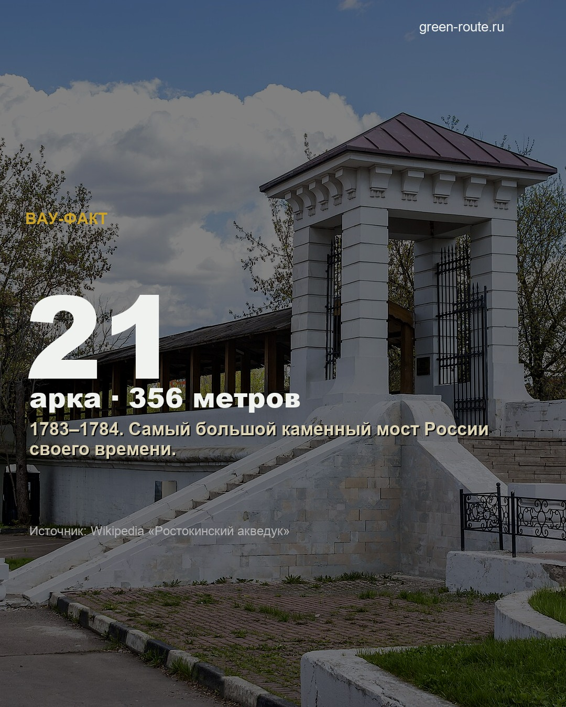
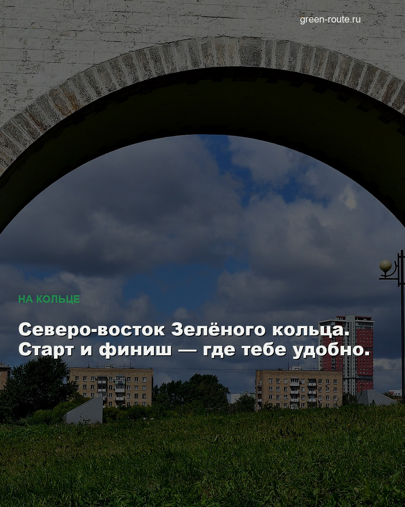
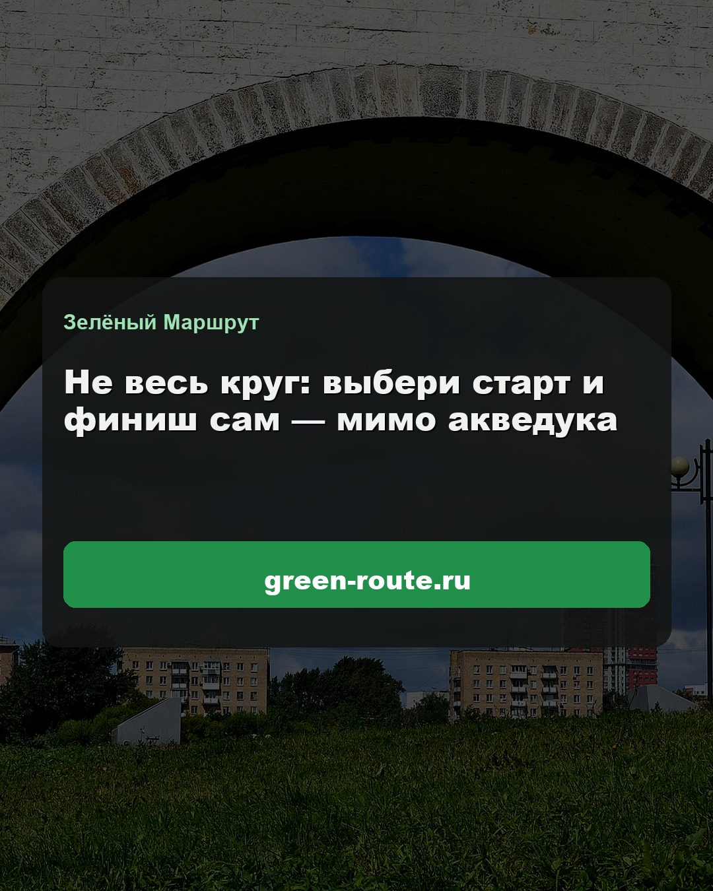

Ростокинский акведук — готовые слайды 4:5
Реальные фото акведука + surprise-хук «Миллионный мост».
Слайды 1–3 — continuous панорама аркад (SCRL). Бренд:
Зелёный Маршрут · green-route.ru.
1080×1350
6 слайдов
SCRL seam 1→3
CTA #3
ЗМ
zeleny.marshrut
Зелёный Маршрут · Москва






♡ 💬 ➤ 🔖
zeleny.marshrut Акведук XVIII века на Зелёном кольце.
Не весь круг — старт и финиш сам → green-route.ru
Свайпай. Экспорт: export/aqueduct/
Правила, которые заложены
- Curiosity gap на слайде 1 — «акведук в Москве» → свайп за именем/цифрами.
- Один акцент (gold/warm) + green chip ЗКМ, без радуги.
- Источник факта на слайде с цифрой — доверие.
- CTA ротация #3 — «не весь круг».
← Живописный мост
·
система контента